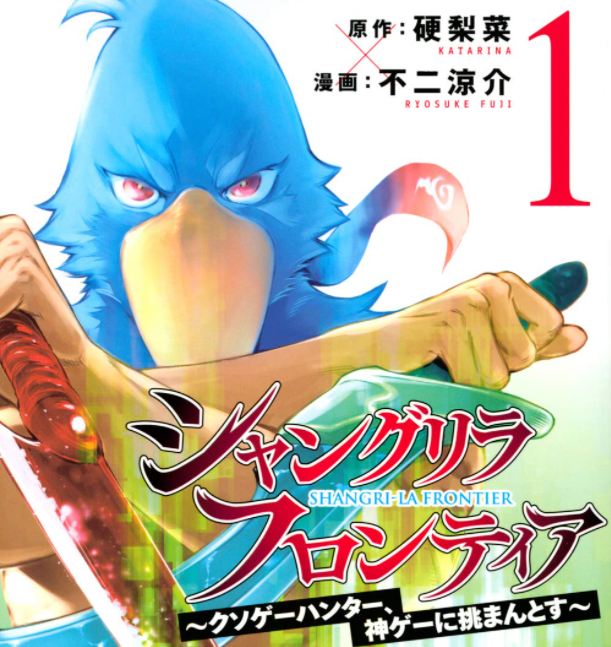

我的興趣 ACGN
日本動畫(Anime)、漫畫(Comics)、電子遊戲(Games)、小說(Novels)
A：日本動畫(Anime) P.S.點擊圖片可觀看維基百科
從幼稚園小學時就開始看動畫，現在是我日常的休閒之一。
>
C：漫畫(Comics) P.S.點擊圖片可觀看維基百科
經常因為被動畫劇情所吸引，而跑去搜尋原作，一周至少看2本的量。

G：電子遊戲(Games) P.S.點擊圖片可觀看維基百科
每天都會與朋友一起玩遊戲，偶爾也很喜歡玩一些單人大作，目前最常玩的是音樂遊戲。
N：小說(Novels) P.S.點擊圖片可觀看維基百科
每當周末沒事做時，我都會去書店或圖書館找小說來看，一周至少看1本。
 >
>